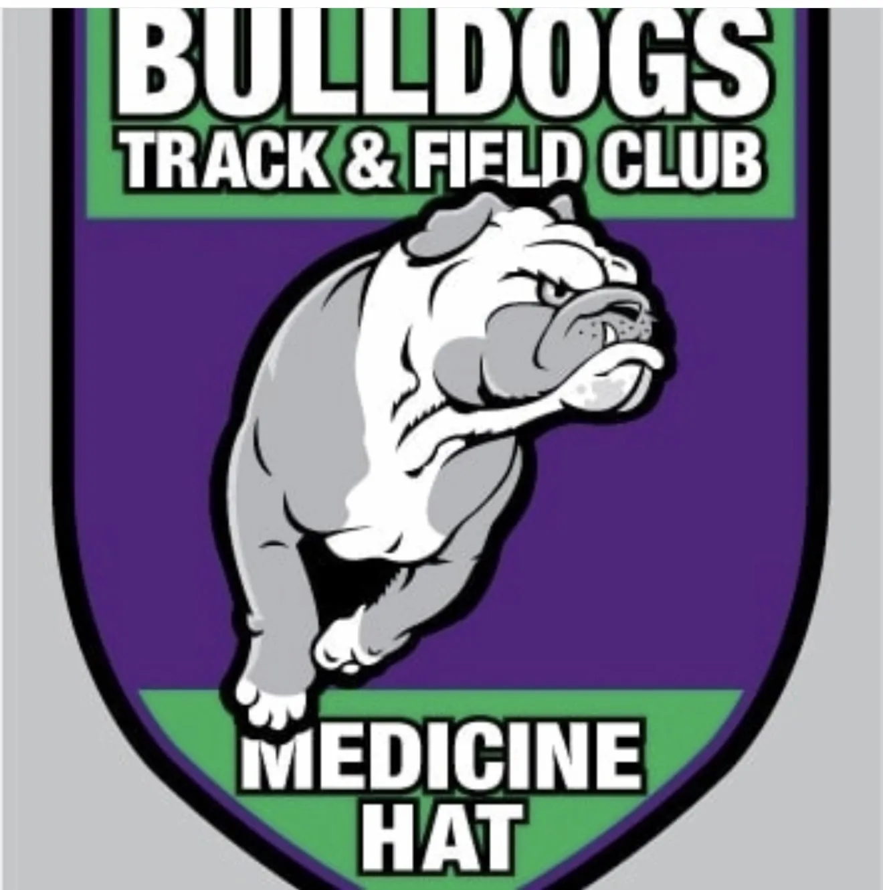
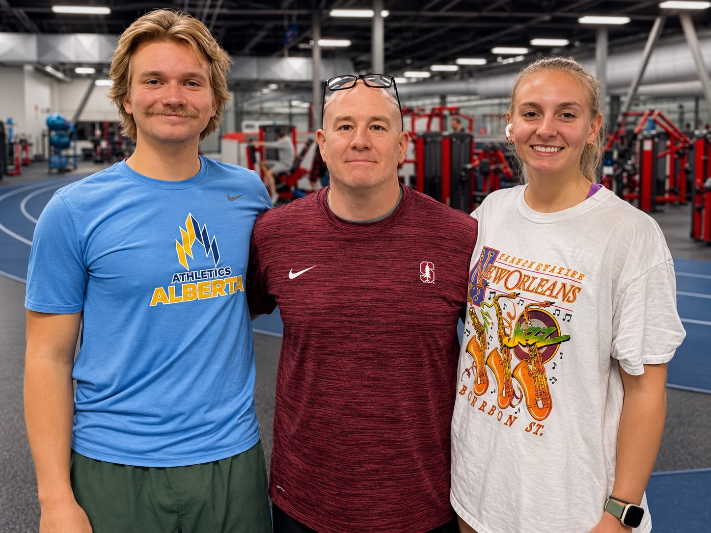

Alberta Indoor Championships
Club-reported: one gold, two silver, four bronze, and ten top-five finishes.

BULLDOGSTRACK & FIELD CLUBTRAIN WITH USCross country, sprint training and open training for athletes who want to improve their running and fitness.


Sean Freeman has coached track and field since 2005. He has served as an indoor-track co-coach with Medicine Hat College’s Rattlers Running program, coordinating sprints and relays. He was recognized among Athletics Alberta’s 2018 Junior Development Coaches of the Year and was named a Team Alberta head coach in 2019. Today, he coaches cross country, sprints, and open training in Medicine Hat.
“Sean has always inspired me and kept in touch to pursue those dreams beyond being in Medicine Hat.” — Madison Kane-Rissling, former Bulldogs athlete (CHAT News, March 2025)
Source: Rattlers Running · Athletics Alberta
WORK WITH SEANChoose the program and training group that works for you. Ask about the next intake, session times, locations, and pricing.
Starting fees for each program appear below when set by the coach.
Confirm any additional competition entry, registration, uniform and gear costs before enrolment.
Sessions are in Medicine Hat. Exact dates, training venues, seasons, and fees are confirmed before registration. Contact for current pricing. Junior High, High School, and College / Open or Adult / Open groups are available by program; ask Sean to confirm your athlete’s grade and eligibility.
Sean has college-level indoor-track coaching experience and provincial coaching recognition. Parents should confirm current coaching certification, screening, supervision, emergency procedures, and safeguarding policies before registering an athlete under 18.
Club-reported: one gold, two silver, four bronze, and ten top-five finishes.
Club-reported: athlete selected for the U16/U18 Tri-Provincial Championships.
Club-reported: first at Panthers race, ninth of 21 U14 boys at provincials.
These historical results are club-supplied and awaiting independent result-sheet verification. The 3× club award years, 12 provincial and four national records have not been verified for publication.
PUT IN THE WORK.
OWN THE RESULT.
Moments from the training, competition, and community that make the Bulldogs.
Tell Sean about the athlete, their age group and what they want to work on. Your join request goes to the Bulldogs admin inbox.
INSTAGRAMPrefer email or Instagram?
medicinehatbulldogstrackclub@gmail.comInstagram @bulldogs.trackandfieldConfirm the club email is still actively monitored; it comes from an older published listing.Sign in with your authorized account to edit the website.
Loading secure admin...
Return to website